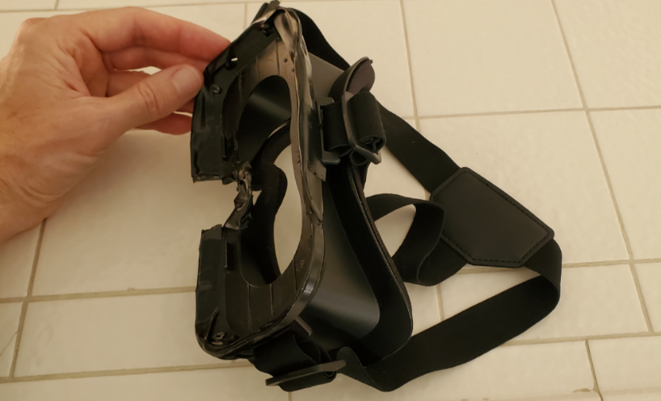

Instructions
- Disable the "Adaptaptive Brightness" feature on your phone.
- Adjust the brightness on your phone until you find what is most comfortable for you.
- Temporarily disable notifications on your phone, so you won't be interrupted during your session.
- Install an app that will keep your screen on. For example, install the Screen Alive App from the Google Play Store.
- Connect your headphones to your smartphone.
- Completely recline in your favorite recliner chair.
- Press the blue start button to begin the flashing.
TIP: Turn your phone horizontally, then scroll so you see the entire "Start" button.
This will maximize the flashing part of the screen. - Put your smartphone in the "DIY Mind Machine Headset" that you can purchase below.
Alternatively, you could simply relax in a dark room and put a phone or tablet close to your face.
A virtual reality headset can also work, although they are quite bulky. - Press anywhere on the screeen to stop the flashing.
Purchase DIY Mind Machine Headset
THE HEADSET IS NOT FOR SALE YET
For best results, you should use the "DIY Mind Machine Headset" that I have custom designed. If you donate $50 to my Pan Mass Challenge Fundraising Page, then I will mail you a headset. Be sure to email me to inform me that you made a donation, and please include your mailing address in your email to me. (I normally only mail within the USA. But if want me to mail the headset to a different country, I can try to work something out.)
My email address is:

Here is the link to my Pan Mass Challenge Fundraising Page
The picture below is just a temporary picture, not the actual headset.

ChatGPT Discussion Regarding Brainwave Entrainment
Question 1: Does brain entrainment really work?
Answer: Brain entrainment, also known as brainwave entrainment, involves using rhythmic external stimuli to induce a desired state of mind. This could include auditory, visual, or tactile stimuli to synchronize brainwaves to a specific frequency. The goal is to influence mental states, improve cognitive function, or enhance relaxation and well-being.
Evidence for Brain Entrainment
- Auditory Entrainment (Binaural Beats and Isochronic Tones):
- Binaural Beats: These involve two different frequencies played in each ear, creating a perceived third tone. Studies suggest that binaural beats can induce states of relaxation, improve mood, and potentially enhance cognitive performance. For instance, some research indicates improvements in attention and anxiety reduction.
- Isochronic Tones: These are regular beats at specific frequencies without the need for headphones. Studies have shown that they can influence relaxation and mental clarity similarly to binaural beats.
- Visual Entrainment (Flickering Lights):
- Flickering lights at certain frequencies have been shown to entrain brainwaves effectively. Research supports the use of visual entrainment for improving cognitive functions, reducing stress, and even managing migraines.
- Tactile Entrainment:
- This method uses vibrations to influence brain activity. While less researched, preliminary studies suggest potential benefits in relaxation and mood improvement.
Scientific Support and Limitations
- Positive Findings: Numerous studies have shown promising results for brainwave entrainment in enhancing cognitive functions, reducing anxiety and stress, and improving sleep. For example, some research supports the use of alpha and theta wave entrainment for relaxation and mental clarity.
- Variability in Outcomes: The effectiveness can vary significantly between individuals, depending on factors like personal susceptibility, the type of stimuli used, and the specific frequencies targeted.
- Placebo Effect: Some researchers argue that the placebo effect may play a significant role in perceived benefits. However, many controlled studies have demonstrated that brainwave entrainment has effects beyond placebo.
Practical Applications
- Meditation and Relaxation: Many users report enhanced meditation experiences and deeper relaxation.
- Cognitive Enhancement: Some evidence suggests improvements in attention, memory, and overall cognitive function.
- Sleep Improvement: Certain frequencies are associated with better sleep quality and quicker onset of sleep.
Conclusion
Brain entrainment appears to have potential benefits for relaxation, cognitive enhancement, and mood improvement, supported by various studies. However, its effectiveness can vary, and more research is needed to fully understand its mechanisms and optimize its application. As with many alternative therapies, it may be most effective when combined with other well-established methods for mental health and cognitive improvement.
Question 2: Should flickering lights gradually ramp up and down when using lights for brainwave entrainment?
Answer: When using flickering lights for brainwave entrainment, gradually ramping up and down the intensity and frequency can be beneficial. This gradual approach helps in smoothly transitioning the brain's state, making the entrainment process more comfortable and potentially more effective. Here are some reasons and best practices for incorporating ramping in brainwave entrainment with flickering lights:
Benefits of Gradual Ramping
- Ease of Adaptation:
- Gradually increasing the frequency and intensity allows the brain to adapt more comfortably, reducing any potential discomfort or overstimulation.
- Enhanced Effectiveness:
- A slow transition can facilitate deeper and more consistent entrainment, helping the brain synchronize more effectively with the target frequency.
- Reduced Risk of Adverse Effects:
- Sudden changes in light intensity or frequency can be jarring and may cause discomfort, headaches, or even seizures in individuals with photosensitive epilepsy. Gradual ramping minimizes these risks.
- Improved Relaxation and Focus:
- For applications aimed at relaxation or focus, a gradual increase can help ease the user into a desired mental state, enhancing the overall experience and benefits.
Best Practices for Gradual Ramping
- Start Low and Slow:
- Begin with a low frequency and light intensity, gradually increasing to the target frequency over a period of a few minutes.
- Smooth Transitions:
- Ensure transitions are smooth and continuous rather than abrupt. This can be achieved using software or devices specifically designed for brainwave entrainment that support gradual ramping features.
- Session Length:
- Allow sufficient time for both the ramp-up and ramp-down phases. A typical session might start with a 5-10 minute ramp-up, followed by the main entrainment period, and then a 5-10 minute ramp-down.
- Monitoring Response:
- Pay attention to the user's response. If discomfort or adverse effects occur, reduce the intensity or stop the session. It’s important to adjust the parameters based on individual tolerance and feedback.
Implementation Example
- Warm-Up Phase:
- Start with a flickering frequency of around 1-2 Hz and low light intensity. Gradually increase the frequency by 1-2 Hz every minute until reaching the target frequency (e.g., 10 Hz for alpha waves).
- Main Entrainment Phase:
- Maintain the target frequency for the desired duration (e.g., 20 minutes).
- Cool-Down Phase:
- Gradually decrease the frequency back to the starting level over the course of several minutes, allowing the brain to transition out of the entrainment state smoothly.
By incorporating gradual ramping into your brainwave entrainment sessions, you can enhance the comfort, safety, and effectiveness of using flickering lights to influence brain activity.